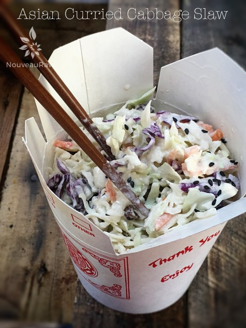
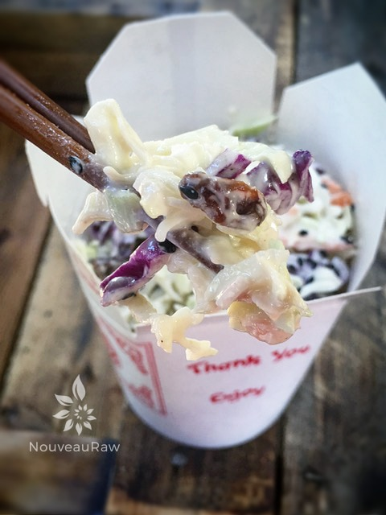

Asian Curried Cabbage Slaw

~ raw, vegan, gluten-free, nut-free ~
Asian Curried Cabbage Slaw is the perfect side dish for stir-fries, Summer entertaining, or as a main dish. This salad doesn’t take long to assemble, and there are a couple of ways that you enjoy it. It is absolutely yummy served in a wrap, on a fork, or if talented enough… chopsticks.
Don’t let the photo fool you.. those chopsticks and I had our fair share of challenges. By the end of the photo shoot, I think more of the slaw ended up on the floor than in the container. I need a dog. It would be a healthy raw eating dog with my clumsiness. hehe
It’s best when it has time to sit so the cabbage softens, and the flavors meld together, so make it the night before or in the morning. One of the great features of cabbage is that it can be doused in dressing and it won’t become soggy.
Cabbage is a nutritional powerhouse, loaded with vitamin C; it helps to boost the immune system. It also has an amino acid, glutamine which is known to help reduce inflammation.
This recipe does make a large amount, but it holds up well for a few days so you can enjoy it for several different meals. In the past I have made it with cashews tossed it, which was downright delicious. A great way to bring in some healthy fats and proteins.
I hope you enjoy this recipe, Many blessings. amie sue
Ingredients:
Dry Ingredients: = 6 cups
- 1/2 head green cabbage, shredded (2 cups)
- 1/2 head purple cabbage, shredded (2 cups)
- 2 carrots, shredded (1 cup)
- 1 cup shredded coconut flakes
- 1/4 cup raisins
Wet Ingredients: = 1 cup dressing
- 1/2 cup raw mayonnaise
- 2 Tbsp Tamari
- 2 Tbsp fresh lemon juice
- 3 Tbsp black sesame seeds
- 2 tsp raw agave nectar
- 1/4 tsp ground turmeric
- 1/2 tsp ground curry
- 1/2 tsp ground cumin
Preparation:
- Shred the cabbage and carrots either by hand with a knife or in your food processor. Place in a large bowl and add the coconut and raisins. Toss together.
- In a small bowl combine the mayo, Tamari, lemon juice, sesame seeds, sweetener, turmeric, curry, and cumin. Mix well.
- Pour the dressing over the veggies and mix well, making sure cabbage is evenly coated.
- If possible, chill for at least an hour and toss thoroughly again before serving. This will allow all the flavors to mingle and blend.
- Best enjoyed within 2-3 days.

© AmieSue.com